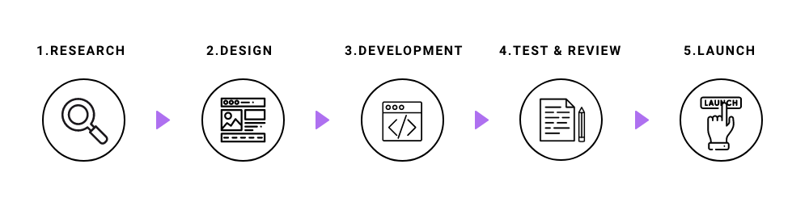
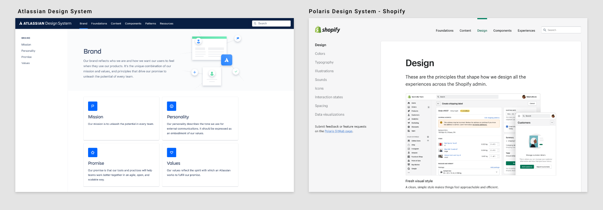
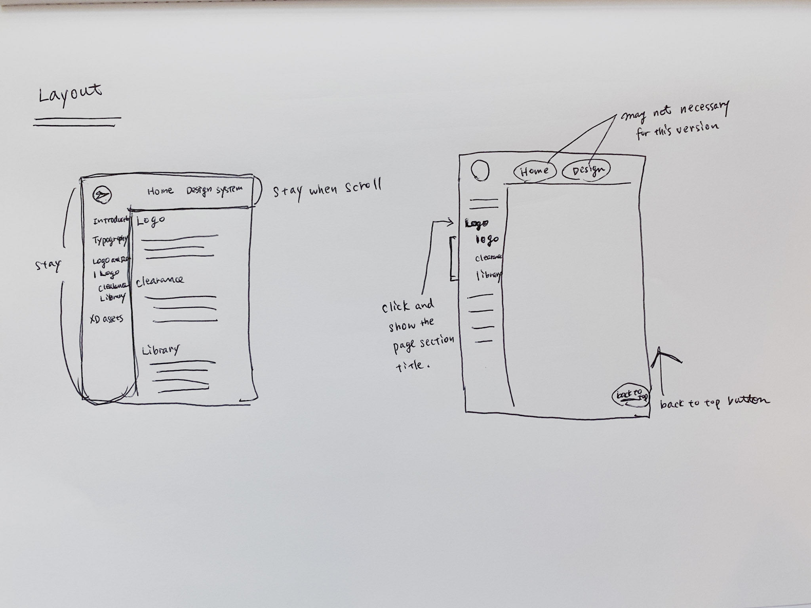
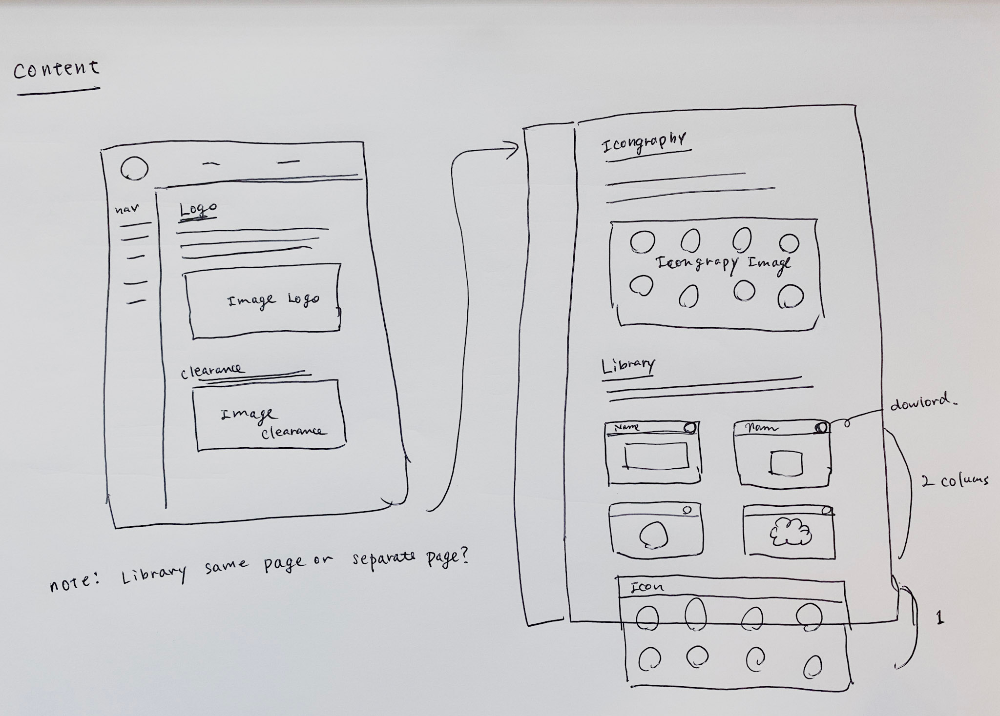
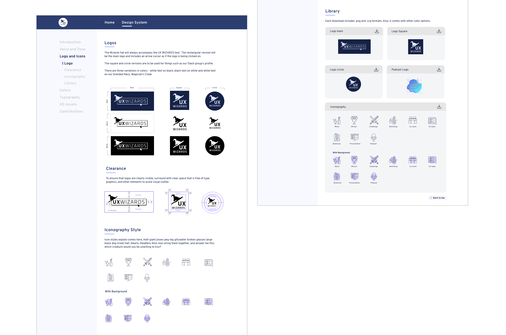

Logos and Icons pages
I created brand guild pages on Logos therefore I was assigned to the Logos and Icons page. Moreover, I’m the Design team lead, so familiar with the history of the assets.
This section is focused on the Logos and Icons page creation process.
Process
1.Research
I researched 2 things, first, was navigation, interaction, and information structure. Second was the downloadable assets section and its organization.
Navigation
I went through multiple design systems and my personal favorites were Atlassian and Polaris Shopify.
Both Atlassian and Polaris design system's layout are global navigation on top and sub navigation on left side. I was looking for the icon page in design systems’ sites and this layout is the fastest to reach the page.
One thing I wish these 2 sites had was both global navigation on top and side navigation that stayed even when you scrolled down to the end so that we don’t have to scroll up to switch pages.
Logo library
Most major company’s design systems have a standalone library website which include logos, typography, illustrations and more. These pages have 2 main ways of downloading assets. Downloading by package with all the approved colors and formats or selecting one specific design or format type and downloading that.
The benefit of downloading a package is that those who need to download a selection of assets don't have to repeatedly download. However it can be wasteful for those who need only one particular item.
Download package per logotype:
Team layout decision is navigation on left
After the individual research, each team member did a 5 minute presentation to the team. The consensus was the team liked the navigation on the left side because you could scan through the categories easily. With the side navigation you only needed one or two clicks to take you to your desired page. We agreed on the website layout and moved on to the design phase.

2.Design
I made a quick sketch based on the research and team discussion.
I added notes about how I wanted interaction to work on the layout sketch. I wanted the header and side navigation menus to stay on the page when scrolling on the site. When clicking a navigation item on the left navigation menu, a sub navigation menu appears underneath the clicked on item. When clicking a sub navigation item, it takes you to the selected item’s section.
Layout sketch
I added notes about how I wanted interaction to work on the layout sketch. I wanted the header and side navigation menus to stay on the page when scrolling on the site. When clicking a navigation item on the left navigation menu, a sub navigation menu appears underneath the clicked on item. When clicking a sub navigation item, it takes you to the selected item’s section.
Content sketch
The design system’s basic structure is title, description and image. The Logos and Iconography section follow this structure.
The Library section could have been a separate page but since there are not that many assets I just put it on the same page. I added an asset download card for each asset type, because I wanted users to be able to see all the items at a glance.
Each asset download card has a download button. This download button will download the package of assets that will include .png and .svg files of the selected logo style and all color options. We went with packaged downloads because this avoids having a long page and will be less maintenance when adding or removing items from the library.
High-fidelity
Move to a high fidelity digital mockup after the design idea became clear
Prototype
To show overall website interaction to the team, I created a prototype.
3.Development
We had some workshops to learn basic coding and Github before we went to the development stage. One of our developers set up a site with a sample page. When building our own page, we referred to the sample page and filled it out with our own content. Small adjustments like font sizes, content width and colors were made to be more consistent across all pages.
The main tools we used were:
 React &
React &  Material UI - Javascript framework
Material UI - Javascript framework TailWind - Utility-first CSS framework
TailWind - Utility-first CSS framework Github - Source control
Github - Source control Visual Studio Code - Text editor
Visual Studio Code - Text editor
4.Test & Review
Two weeks before launching, we had a team review and prioritized final tasks. Tasks were categorized to critical features and won’t stop release. Instead of focusing on small details, we decided to complete necessary features and launch before the due date. This worked well to understand how many critical tasks we left and the importance of tasks.

Final update before launching
A few small changes were made. The Wording Library was switched to Download to have a clearer message. The download icon button color was changed to the color “Acid Purple” (one of our brand color names). We standardized buttons and clickable links to be the color Acid Purple so that the download button followed the style set.

5.Launch
This project was completed in 10 weeks as scheduled and we deployed our first version on April 15, 2021.
VIEW DESIGN SYSTEM